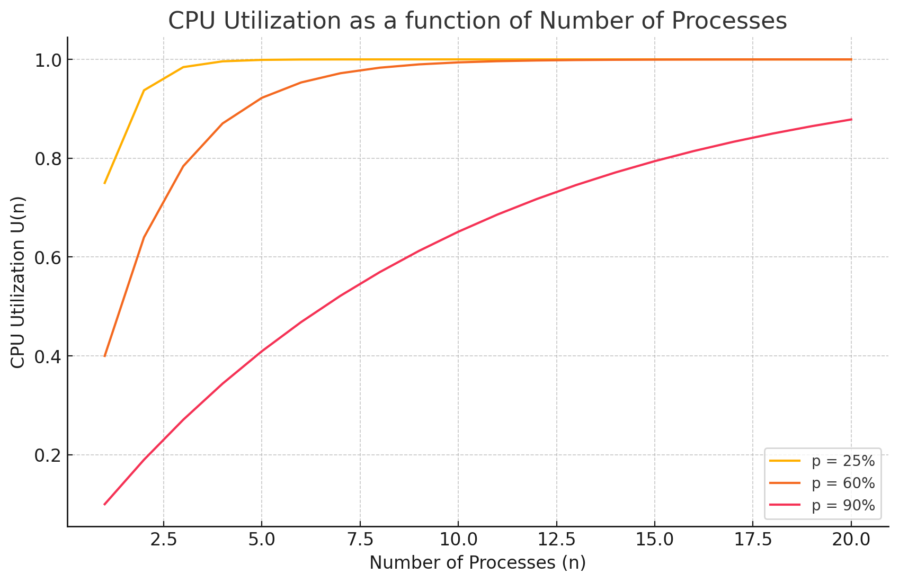

Index
Assignment II
ECE4820 FA2024 Introduction to Operating Systems 518370990004 Jae Heung Park
Exercise 1
A few years ago when computers featured less RAM it is was common to increase it in order to enhance CPU performance. In order to better understand the link between the two we now create a simple model for multiprogramming. We assume all the processes to be similar and spending the same fraction p of their time waiting for Input/Output (I/O) to complete.
1. What is the probability for n processes to be waiting at the same time, then express the CPU utilisation as a function of n?
Probability $p^n$
CPU Utilization $U(n)=1-p^n$ where $n$ is number of process.
2. Sketch the curve representing the CPU utilisation as a function of the number of processes for the following values of p: 25%, 60% and 90%.
Suppose CPU Utilization $U$ function for $n$ number of process $U(n)$.

3. A certain old computer has 256 MB of RAM, once loaded a light operating system uses 96 MB of RAM.
Several programs are launched each of them using 48 MB.
a) How many processes can be store simultaneously in memory?
Given 256 MB RAM, OS uses 96 MB, 160 MB left and
each process takes 48 MB.
Suppose 4 processors share 160 MB, then it is 40 MB per each,
which is less than 48 MB required for process to run.
If 3 processors share 160MB, then its capacity is 53.3 per each,
enough to handle each process.
Thus, 3 processes can be store simultaneously in memory.
b) Assuming an average of 90% I/O waiting time what is the CPU utilisation?
Since $p=0.9$ and $n=3$, $U(n)=1-p^n=1-(0.9)^{3}=1-0.729=0.271$
Thus, CPU utilization U=27.1%
c) What is the effect of adding 256 MB, 512 MB and 1024 MB of RAM. Argue on which amount would be the most beneficial and would be worth the investment.
$256 + 256 \rightarrow (512 - 96) / 48 = 416 / 48 = 8.67 \rightarrow U(8)=1−0.90^{8}=1−0.430=0.570$
$256 + 512 \rightarrow (768 - 96) / 48 = 672 / 48 = 14 \rightarrow U(8)=1−0.90^{14}=1−0.206=0.794$
$256 + 1024 \rightarrow (1280 - 96) / 48 = 1184 / 48 = 24.67 \rightarrow U(8)=1−0.90^{24}=1−0.121=0.879$
Ex. 2 — Understanding system calls
1. Briefly introduce strace and ltrace. Explain they could be helpful along the semester.
Both strace and ltrace are trace debugging tools.
strace traces based on system calls by following interaction between Linux kernel and program.
ltrace traces library calls instead of system call.
This shows logs of library dependent function calls.
2. What are the manpages sections for system calls and library calls?
In convention, system calls are in section 2 and library calls are in section 3.
Use command like
man 2 <system_call_name> for system calls and
man 3 <library_function_name> for library functions.
3. System calls.
a) What are the main types of system calls?
- Process management: creation, termination, control
exit(0),fork(),exec() - File management: open close read write
open(),close(),read(),write() - Device management: IO operation, peripheral interaction
ioctl() - Information maintenance: system level info setup and retrieval
getpid(),getuid(),setuid() - Inter Process Communication IPC: send message
pipe(),msgsnd()
b) Run strace on the ls command and classify all the listed system calls.
strace ls
output file on strace_ls.txt
- Process protocol
execve("/usr/bin/ls", ["ls"], 0xfffff3920cf0 /* 53 vars */) = 0 - Memory management
brk, mmap, munmap - File management
openat(AT_FDCWD, "..."), read(...), close(...) - Device management
ioctl(...) - Information maintenance
statfs(...), getrandom(...) - Communication
prlimit64(...) - Exit
exit_group(0)
c) Select a line of your choice in strace output and explain its meaning.
openat(AT_FDCWD, ".", O_RDONLY|O_NONBLOCK|O_CLOEXEC|O_DIRECTORY) = 3
openat(): Open file relative to a directory file descriptor.AT_FDCWDmeans directory is current working directory./lib/aarch64-linux-gnu/libselinux.so.1File opened in SELinux shared library.O_RDONLY|O_CLOEXEC: File is opened in read-only modeO_RDONLY, andO_CLOEXECmeans file descriptor will be automatically closed if process performsexec()system call.3: This is the file descriptor returned by the system call.
d) How to attach strace to a running process? Describe a scenario where this could be handy
strace -p <pid>
<pid> should be ID of running process.
Ex. 3 — A simple system call
1. Kernel printing.
a) What is the counterpart of printf() when working inside the Linux kernel?
The printk is the counterpart of printf inside Linux kernel log.
It is visible in dmesg.
b) Write the body a simple “kernel function” displaying “Mum is proud of you!”
void mum_is_proud(void) {
printk(KERN_INFO "Mum is proud of you!\n");
}
KERN_INFO is one level of log, meaning it is not information.
2. Headers and function name.
a) What header files should be included when adding a new system call?
#include <linux/kernel.h> // kernel-related functions including printk().
#include <linux/syscalls.h> // system call macros like SYSCALL_DEFINE.
b) How are the macros SYSCALL_DEFINE0 and SYSCALL_DEFINEx working?
SYSCALL_DEFINE0(name) defines system call with zero arguments. It internally uses the asmlinkage keyword, ensuring function called follows convention for system calls.
SYSCALL_DEFINEx defines system call with x number of arguments where xrange from 0 to 6.
c) Use the SYSCALL_DEFINE0 to define the new system call encouragement. Name your file encouragement.c and save it in a folder encouragement at the root of the kernel source code
#include <linux/kernel.h>
#include <linux/syscalls.h>
SYSCALL_DEFINE0(encouragement) {
printk(KERN_INFO "Mum is proud of you!\n");
return 0;
}
Save at root of the kernel source code.
cd ~/sched_ext-for-6.11/
mkdir encouragement
cd encouragement
echo '#include <linux/kernel.h>
#include <linux/syscalls.h>
SYSCALL_DEFINE0(encouragement) {
printk(KERN_INFO "Mum is proud of you!\n");
return 0;
}' > encouragement.c
3. Makefile and Kbuild.
a) Jump to the end of Kbuild file and following the same patterns as on the last few lines, add your encouragement directory there.
nano Kbuild
obj-$(CONFIG_SAMPLES) += samples/
obj-$(CONFIG_NET) += net/
obj-y += virt/
obj-y += $(ARCH_DRIVERS)
obj-y += encouragement/
b) Check the Makefiles for the directories listed at the end of Kbuild file and create a Makefile for your encouragement directory.
touch Makefile
# Makefile of J H Park
obj-y := encouragement.o
4. System call registration.
a) Add your new system call to syscalls.h.
Hint: there are more than one such file, make sure to edit the correct one!
Correct position at /include/linux/syscalls.h in my M3 Mac will be ARM64.
However, cat arch/aarch64/include/asm/syscalls.h does not exist.
Only cat arch/arm/include/asm/syscall.h exist.
uname -m
aarch64
cat arch/arm64/include/asm/syscall
syscall.h syscall_wrapper.h
cat arch/arm/include/asm/syscalls.h
Instead of editing arch/arm64/include/asm/syscall.h
I edited arch/arm64/include/asm/syscall.h
# nano arch/arm64/include/asm/syscall.h
nano include/linux/syscalls.h
asmlinkage long sys_encouragement(void);
b) Add your new system call to syscall_64.tbl.
Hint: what architecture is your Linux running on?
M3 Mac should set system call value in different position.
nano arch/arm64/kernel/syscall.c
#include <linux/kernel.h> // Included
#include <linux/syscalls.h> // Included
SYSCALL_DEFINE0(encouragement) {
printk(KERN_INFO "Mum is proud of you!\n");
return 0;
}
5. Recompile the kernel and reboot (do not forget to update the bootloader).
Recompile
make -j$(nproc)
If modules are not installed install
make modules_install
make install
reboot
6. Write a simple user space program to demonstrate the well functioning of your system call.
This is program.
#include <stdio.h>
#include <unistd.h>
#include <sys/syscall.h>
int main() {
long result = syscall(438);
printf("Syscall returned: %ld\n", result);
return 0;
}
If kernel reaches storage issue
df -h
make clean
make mrproper
df -h